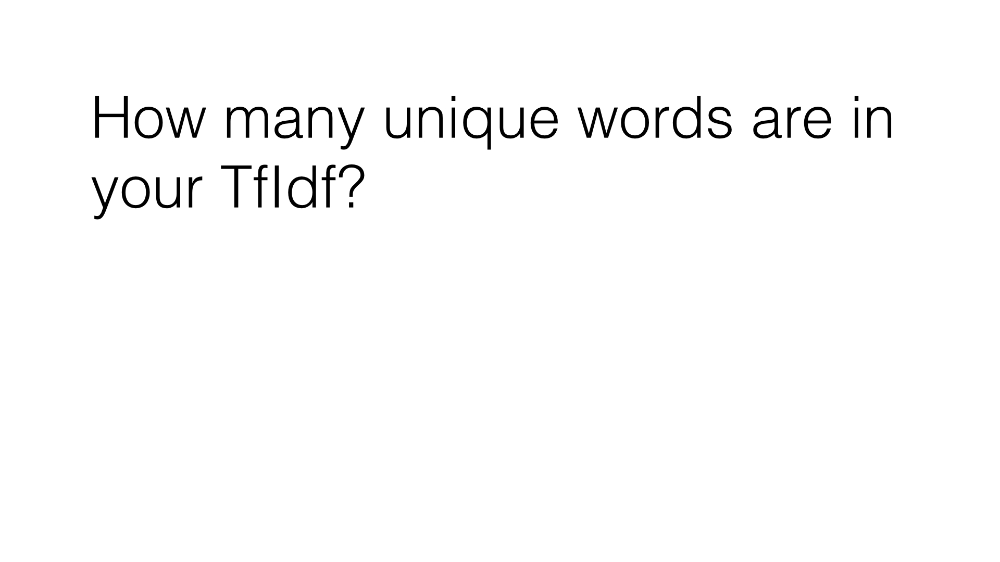

20. 进行 TfIdf
进行 TfIdf
Question:
使用 sklearn TfIdf 转换将 word_data 转换为 tf-idf 矩阵。删除英文停止词。
你可以使用 get_feature_names() 访问单词和特征数字之间的映射，该函数返回一个包含词汇表所有单词的列表。有多少不同的单词？
Start Quiz:

INSTRUCTOR NOTE:
确保使用 tf-idf 向量器类来转换词数据。
切记在你设置向量器时删除英文停止词。